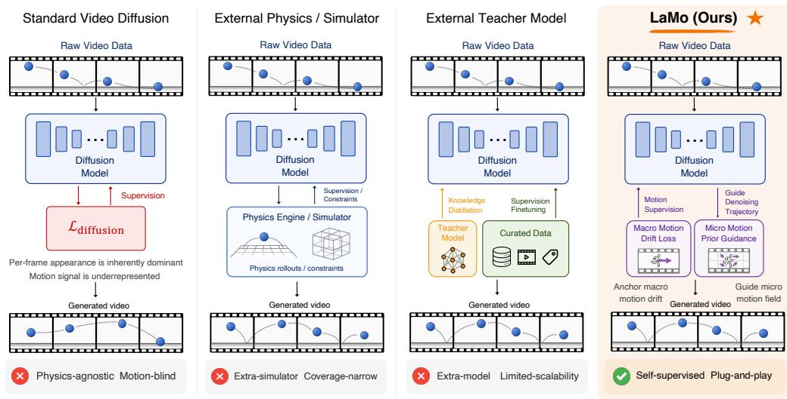

Figureure 2 · : LaMo OverviewFigure 2: LaMo Overview. Frame-to-frame differences of clean VAE latents yield a self-supervised latent motion prior, exposed through two readouts: a macro motion drift used as a training-time Motion Drift Loss, and a lightweight learned micro motion field used at sampling as Motion Prior Guidance. Both share the backbone’s prompt conditioning and leave its architecture unchanged.这张图概括 LaMo 的整体方法流程。阅读时先看模块之间传递的训练信号，再看作者如何把目标拆成可优化的子问题。

Figureure 1 · : Existing approaches to physical realism rely on hand-crafted physicsFigure 1: Existing approaches to physical realism rely on hand-crafted physics simulators (Col. 2) or on foundation-model teachers and curated physics-annotated corpora (Col. 3), while the vanilla diffusion objective is inherently dominant by per-frame appearance (Col. 1). LaMo (Col. 4) instead surfaces this missing motion signal self-supervised from the same raw video data, via a our proposed Motion Drift Loss at training and a lightweight Motion Prior Guidance at inference.这张图来自论文 PDF 的结构化抽取。当前用于辅助理解 LaMo 的方法或实验，请结合正文精读段落一起看。